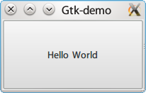

newlisp 是另外一個我很喜歡的 lisp 方言，他的語法比較接近 Scheme，適合做 為腳本語言，此外，由於他的程式體積非常輕巧，只有大約 300k 的大小，因此 做出來的執行檔也比較小。本文將透過 GTK 版的 Hello World 來展示使用 newlisp 的 FFI (Foreign Function Interface) 來建立 GTK 的視窗。
程式截圖
由於我們要用 C 語言與 newlisp 寫同樣的東西，先來看看最後結果會長怎樣。

C 語言版本
這整個 newlisp 程式是依樣畫葫蘆從 C 語言版本轉換過去，我們先來看看 C 語言 的版本。
/* * Compile command: * gcc hello.c -o hello `pkg-config --libs --cflags gtk+-2.0` */ #include <gtk/gtk.h> int main(int argc, char *argv[]) { GtkWidget *window; GtkWidget *button; gtk_init (&argc, &argv); /* Create the main, top level, window */ window = gtk_window_new (GTK_WINDOW_TOPLEVEL); /* Give window title */ gtk_window_set_title (GTK_WINDOW (window), "Gtk-demo"); /* Setup default window size */ gtk_widget_set_size_request (GTK_WINDOW (window), 200,100); /* Connect the destroy signal of the window to gtk_main_quit * When the window is about to be destroyd we get a notification * and stop the main GTK+ loop. */ g_signal_connect (window, "destroy", G_CALLBACK (gtk_main_quit), NULL); /* Create the "Hello World" button */ button = gtk_button_new_with_label ("Hello World"); /* Insert button into the main window */ gtk_container_add (GTK_CONTAINER (window), button); /* Make sure that everything, window and button, are visible. */ gtk_widget_show_all (window); /* Start the main loop, and let it reset there until the * application is closed. */ gtk_main (); return 0; }
newlisp 版本
由於並沒有 newlisp 版本的 GTK wrapper，因此我們必須透過 lisp 的 FFI 功能 (Foreign Function Interface，相當於 C 語言的 dlopen 功能)來呼叫 GTK 的 function。
首先先從 libraries 裏面載入需要的 function，接著就可以和寫 C 語言版本的 hello world 一樣，直接使用這些 function 來產生我們需要的 gtk 圖形介面了。
#!/usr/bin/env newlisp ;; Predefine libraries for Linux platform (set 'GTK "libgtk-x11-2.0.so.0") (set 'GOBJECT "libgobject-2.0.so.0") ;; Get functions from libraries (import GOBJECT "g_signal_connect_data") (import GTK "gtk_init") (import GTK "gtk_main") (import GTK "gtk_exit") (import GTK "gtk_widget_show_all") (import GTK "gtk_window_new") (import GTK "gtk_window_set_title") (import GTK "gtk_widget_set_size_request") (import GTK "gtk_button_new_with_label") (import GTK "gtk_container_add") (import GTK "gtk_main") ;; callback to exit program (define (_exit_) (gtk_exit 0) (exit)) ;; initial gtk (gtk_init 0 0) ;; Create the main, top level, window (set 'WINDOW (gtk_window_new 0)) ;; Give window title (gtk_window_set_title WINDOW "Gtk-demo") ;; Setup default window size (gtk_widget_set_size_request WINDOW 200 100) ;; Connect the destroy signal of the window to gtk_main_quit ;; When the window is about to be destroyd we get a notification ;; and stop the main GTK+ loop. (g_signal_connect_data WINDOW "delete-event" (callback 0 '_exit_) 0 0 0) ;; Create the "Hello World" button (set 'button (gtk_button_new_with_label "Hello World")) ;; Insert button into the main window (gtk_container_add WINDOW button) ;; Make sure that everything, window and button, are visible. (gtk_widget_show_all WINDOW) ;; Start the main loop, and let it reset there until the ;; application is closed. (gtk_main) ;; After all done, exit newlisp environment (_exit_)